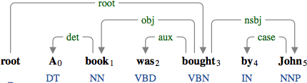
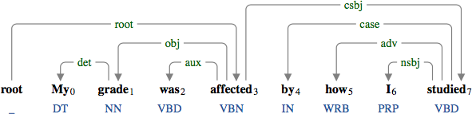
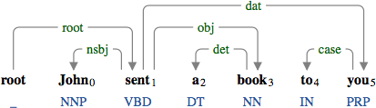
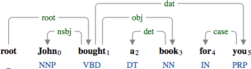
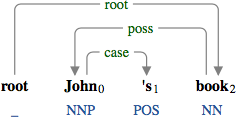
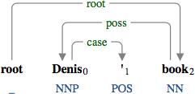

A case marker (case) indicates the preposition used for the nominal/clausal subject in a passive construction.

The preposition "by" used for the nominal subject in the passive construction.

The preposition "by" used for the clausal subject in the passive construction.
The case marker indicates the preposition used for the dative case.

The preposition "to" used for the dative case.

The preposition "for" used for the dative case.
The case marker indicates the possessive marker in the possessive modifier.

The possessive marker "'s".

The possessive marker "'".